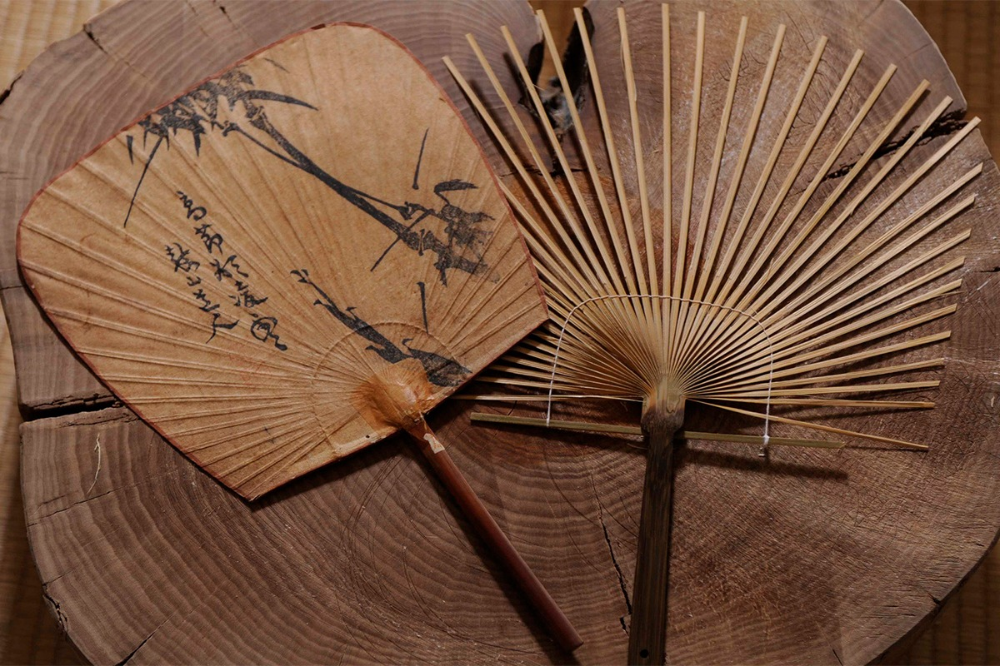
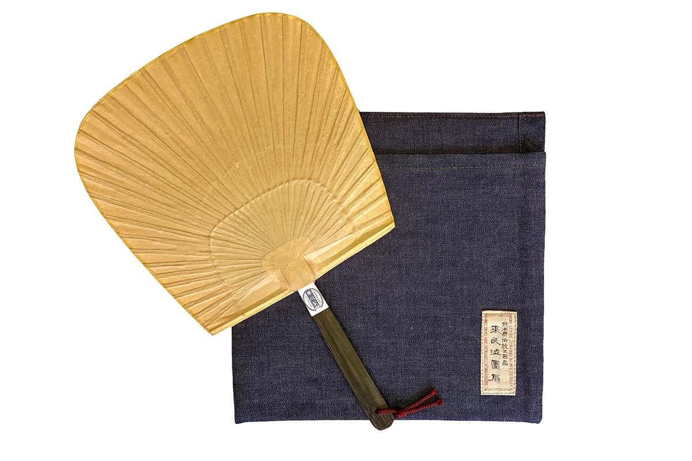
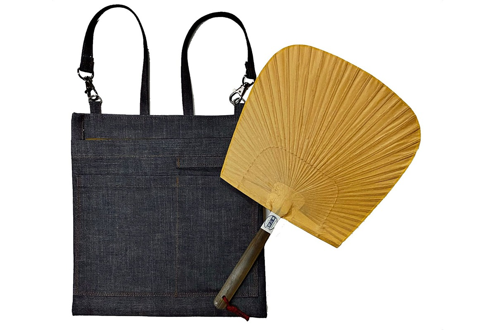
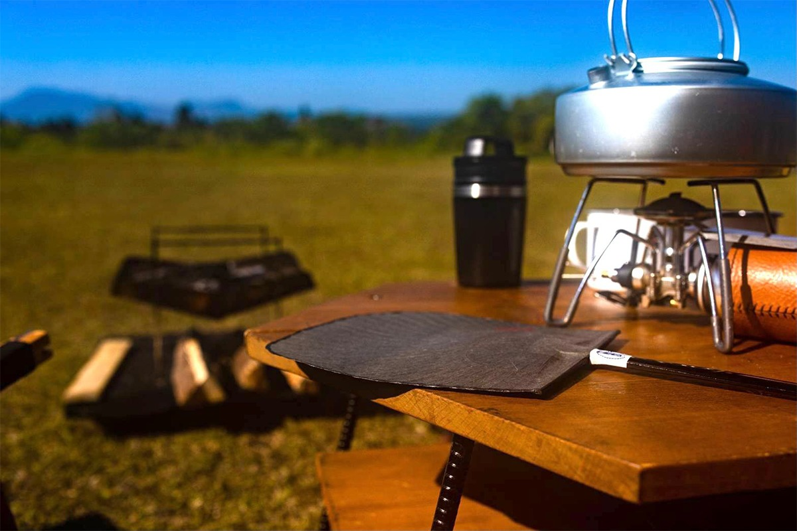
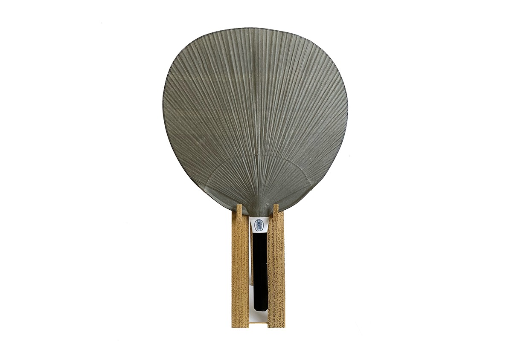
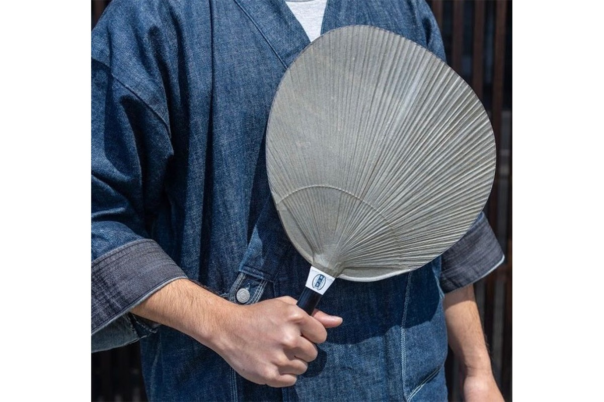
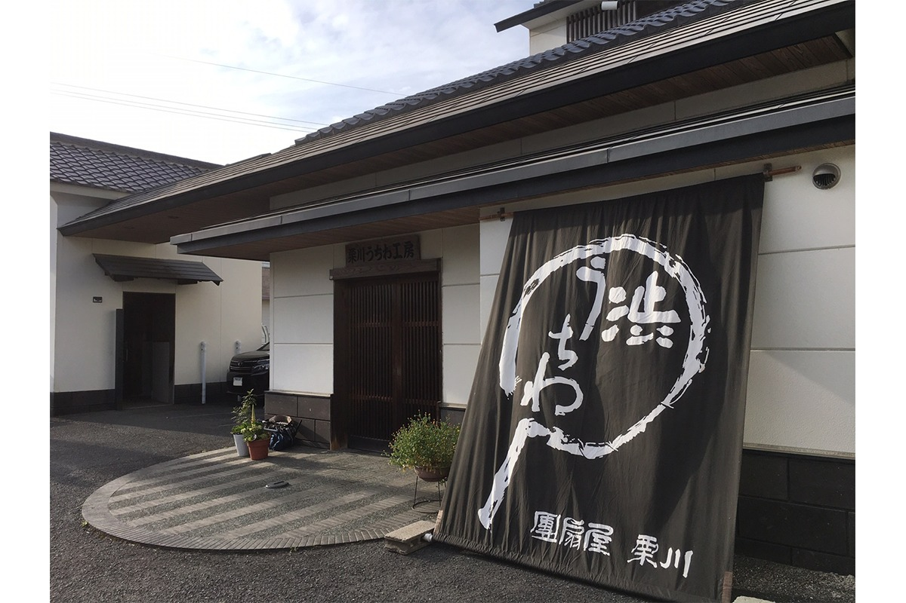

Префектура Кумамото · Ямага · ремесло
Веера Кутами: бамбук, бумага васи и хурма, которым хватает на сто лет

Веер утива в Японии обычно живёт одно лето. Веер из Кутами, обтянутый бумагой и пропитанный соком хурмы, может прослужить больше ста лет, и делают его теперь только в одной мастерской.
Мастерская
Последние веера Кутами
Кутами это район в городе Ямага на севере префектуры Кумамото, в бывшем городке Камото. Сто лет назад его название знали по всей Японии: с середины 1920-х, последних лет эпохи Тайсё, и примерно до 1935 года здесь выпускали до пяти миллионов вееров в год.
По данным на 2021 год, веера в Кутами делает только «Курикава сётэн». Мастерскую основали в 1889 году, и она одна продолжает дело района, который когда-то вместе с Киото и Маругамэ считался одним из трёх главных центров производства утива в стране. Каркас из бамбука, бумагу и покрытие опытные мастера собирают вручную, и все материалы японские.
История
Секрет странствующего монаха
По преданию, ремесло пришло в Кутами в 1600 году. Странствующий монах из Маругамэ, города на острове Сикоку, остановился здесь на ночлег и в благодарность за кров научил хозяев делать веера.
Главное в сибу-утива это «какисибу», сок мелкой хурмы мамэгаки. Плоды сбраживают, а сок выдерживают в глиняных кувшинах. Этим соком покрывают бумагу веера: васи становится прочнее, служит дольше, а насекомые её не трогают. Отсюда и название: «сибу» значит «терпкий сок хурмы».
Название района пишется иероглифами «народ приходит», поэтому такой веер считается приметой хорошей торговли: к хозяину потянутся покупатели. Прочные сибу-утива веками дарили на рождение ребёнка и на шестидесятилетие, отдавали гостям в подарок со свадьбы, заказывали к юбилеям компаний.
В дорогу
Веер, который можно взять с собой
Веер красив, но хранить его дома неудобно, а брать с собой ещё неудобнее. Для этого мастерская сшила к вееру чехол и сумку из денима. В комплект к ним идёт «косэн», уменьшенный вариант классического веера «сэнсэн» с полем 21,5 на 21 см. Его делают из бамбука мадакэ с внешнего кольца кальдеры Асо, бумаги ручного отлива и собственного сока хурмы.


Сумку можно носить на плече или убрать внутрь другой сумки. Большие веера, тот же «сэнсэн» или овальный «кобан», в неё не помещаются: она рассчитана на «косэн».

Шедевр
Веер цвета туши
Самая изысканная вещь мастерской это большой круглый веер «Сиросибу омару мацуба» с покрытием из сине-серой туши аосуми. Рисунка на нём нет, но в этой сдержанности чувствуется спокойная красота ваби-саби. Каждый лист бумаги покрывают тушью вручную, поэтому форма и оттенок у каждого веера свои: из природных материалов двух одинаковых не получается.


Летом с таким веером в руке легко почувствовать себя человеком старой культуры, который знает толк в прохладе и красивых вещах.

«Курикава сётэн»
- Адрес
- префектура Кумамото, Ямага, Камото-мати Кутами, 1648
- Телефон
- +81 968-46-2051
- Часы работы
- 8:30–17:30
- Выходные
- воскресенье, праздничные дни; с января по март также суббота
- Сайт
- uchiwa.jp, интернет-магазин kurikawa-uchiwa.shop